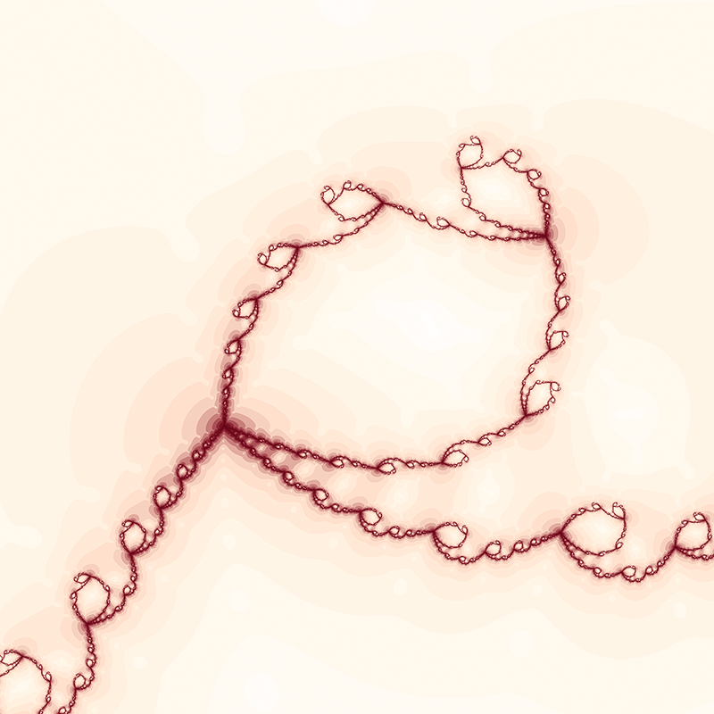

Newton Raphson Fractals
Written by Paul Bourke
Original August 1989, Updated April 2019
This fractal image technique is based on the Newton Raphson method of finding the solution
(roots) to a polynomial equation of the form

The method generates a series where the n+1'th approximation to the solution is
given by

where f'(zn)
is the slope (first derivative) of f(z) evaluated at zn. To create
a 2D image using this technique each point in a partition of the complex plane is used
as initial guess,
zo, to the solution. The point is coloured depending on which
solution is found and/or how long it took to arrive at the solution. A simple
example is an application of the above to find the three roots of the
polynomial
z3 - 1 = 0
The following shows the three roots (red, green, blue circles) on the complex image plane
and the grey level illustrates how
long it takes the series to converge to one of those roots.
A trademark
of chaotic systems is that very similar initial conditions can give rise to
very different behaviour. In the image above there are points very close
together one of which converges to a root very quickly and the other
converges very slowly.
To illustrate this further, it is not just the convergence
rate that is sensitive to inital conditions but also the root actually converged to.
The following colours the regions where points converge to one of the three roots, shaded
as red, green and blue. Again, points arbitrarily close to each other can converge
to different roots.
Examples

Older examples from 1989
| {kind=link}
{kind=link}
{kind=link}
{kind=link}
{kind=link}
{kind=link}
{kind=link}
{kind=link}
{kind=link}
{kind=link}